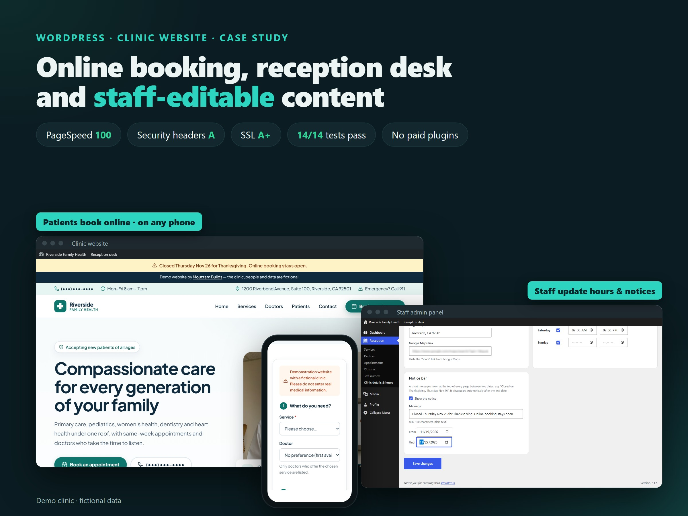

Case study · WordPress clinic website
Riverside Family Health:
booking, reception desk and staff-editable content
A demo website for a family clinic (fictional clinic, people and data). Custom WordPress theme and booking plugin, no paid plugins.

100PageSpeed performance, accessibility, best practices
A / A+Security headers A · SSL A+
14 / 14Automated tests pass
For reception
Every request in one dashboard

Reception desk: today's numbers, filters, and one-click actions on every request.
- One click confirms, declines, reschedules, cancels or completes an appointment, with a full history.
- No double bookings: if two people confirm the same time, the system checks again and only one goes through (tested in parallel).
- Overlap warnings show reception when two requests ask for the same time.
- Patient messages (receipt, confirmation, reschedule, cancellation, reminder) are written automatically. In this demo they go to a test outbox, never to a real inbox.
- Roles: reception staff manage appointments; only the clinic manager changes clinic settings.
For the clinic manager
The team updates the website. No developer needed.

Clinic details & hours: phone, email, address, opening hours and a dated notice bar.

Saved: the notice and the new hours appear on every page at once.

Doctor availability: working hours, split shifts and days off.

Holidays, training days and leave disappear from booking at once.
Mistakes are caught: if something is wrong (for example a closing time before the opening time) nothing is saved and the page says what to fix. Header, footer, contact page, booking page and the information Google reads all update from the same place.
Tested before handover
Measured like a real client site

Before → after at go-live (13 booking tests then; the 14th, staff editing, was added later). The SEO score is limited only because this demo is hidden from Google on purpose.
14 automated tests, all passing
- Each service shows only its doctors
- Closed days and wrong times are rejected
- Request saved with reference, pending
- Shows up in reception at once
- Two confirmations: only one wins
- Patient link cancels and frees the time
- Staff reschedule keeps the booking
- No access without the right role
- Messages go to the test outbox only
- Works on a 375 px phone
- No browser console errors
- Staff edits show on the website and in Google data
- Invalid hours are refused
- Reception can't change clinic settings
Built with
WordPressCustom themeCustom booking plugin (PHP)JavaScriptREST APIMySQLSchema.org structured dataPlaywright testsNo paid plugins
Need a clinic website your team can actually manage? Send me a message.